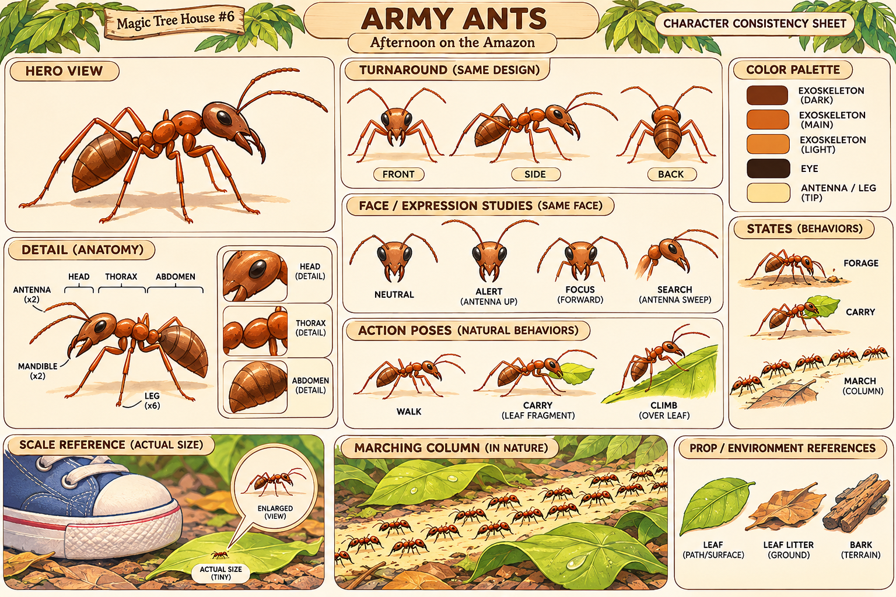

← Part 1 · Part 2 · 캐릭터 기준Chapter 4 · Millions of Them!
매 배치 전에 이 페이지와 실제 시트를 확인한다. 70–85, 86–101, 102–115번의 3배치. 4권에서 확정한 얼굴과 앞 장의 따뜻한 선화·수채 색감을 유지한다.
- 70–75번은 사다리 위, Jack이 아래·Annie가 위. 76번 숲바닥 도착. 마른 옷, Jack의 유일한 황갈색 배낭, Annie의 주머니 속 Peanut을 유지한다.
- 78번부터 녹색 책을 꺼내 읽고, 112번 배낭에 다시 넣는다. 숲바닥은 낙엽·넓은 나무·덩굴·이끼, 어둡고 빛줄기가 적다.
- 거미·거대 벌레·지켜보는 눈은 상상이나 느낌이다. 실제 괴물이나 눈을 추가하지 않는다. 91번 새·개구리·도마뱀이 도망친다.
- 94번 군대개미는 책의 설명이며, 현장의 행렬은 98번에 드러난다. 작은 개미가 낙엽 위로 밀집 행진한다. 시트의 잎 운반 예시는 사용하지 않는다. 거대 개미나 인체 공격은 만들지 않는다.
- 99번부터 나무집·사다리는 보이지 않는다. 106번 갈색 강가 도착. 110번 속을 파낸 통나무 배 발견, 112번 승선, 113번 손으로 강둑 밀기, 115번 떠내려감.
- 카누에는 노·돛·돛대·모터가 없다. 물속으로 실제 걸어 들어가는 장면은 없다. 비·젖은 복장·후속 장의 물고기나 악어는 추가하지 않는다.
- 4×4 실제 경계와 행별 간격을 탐지하고 재단 검수 이미지·개별 이미지를 확인한다. 원본 비율 유지.
Jack

Annie와 Peanut


군대개미
작은 크기·행진만 적용. 잎 운반 예시 제외.

통나무 카누